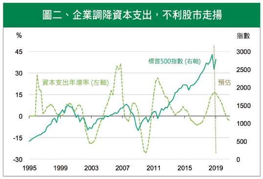
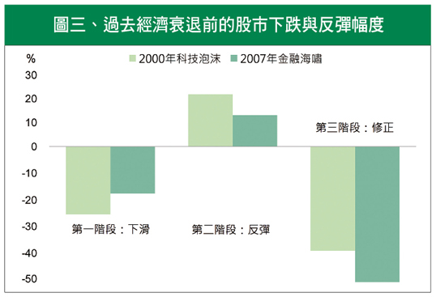

全球景氣偏弱，股市走揚視反彈
回顧去年第四季，美股帶領全球股市一同走跌，各大投資機構也陸續下修今年的經濟成長預期。誰也沒想到，邁入2019年，原本市場極度擔憂的貿易戰，出現戲劇性變化，川普與習近平可能重啟會談。同時，聯準會也向市場遞出橄欖枝，除暫緩升息外，原本預設的縮表計畫，也可能遭到擱置。
隨著市場風險淡化，美股再度走揚，看起來不僅築底，漲幅甚至接近2成，投資人不免衷心盼想：景氣落底了嗎？股市修正結束了嗎？亦或進場時點已浮現？
諸多變數猶存，景氣尚未落底
川普雖然聲稱，美國經濟正處在歷史最佳時期，但在去年底，因全球經濟同步放緩，加上美中貿易僵局影響，歐盟、英國與澳洲央行已陸續下修該國經濟預測。此外，用來觀察景氣衰退與否的公債長短期間利差，則持續縮窄，甚至，聯準會特別關注的3個月國庫券利率及其18個月遠期利率的差距，在今年1月甚至出現反轉（圖一），似乎透露著，目前大環境存有諸多變數。
從實體經濟來看，景氣確實有持續下修的跡象。去年中還很強勢的ISM製造業指數，其趨勢線已明顯反轉向下。向來被認為是景氣領先指標的企業資本支出成長率，預期今年也將出現負值（圖二），特別是半導體產業大廠三星、英特爾等公司，減幅高達10%。從最終商品來看，每次推出新機必造成排隊熱潮的蘋果，去年也首度砍單。種種跡象都提醒投資人，全球股市高點可能已過，而美股亦然。

註1：3M_f18M-3M指3個月國庫券的18個月遠期利率(3M-f 18) ，減去目前的即期利率(3M)。
註2：10Y-2Y指美國10年公債利率，減去2年公債利率。
資料來源：Fed，Bloomberg。

註：資本支出為標普500指數企業之資本支出，取4季平均值。
資料來源：Bloomberg。
反彈還是反彈，布局股市尚早
你可能會想，最近中美貿易談判不是已經緩和了嗎？同時，聯準會官員對於升息的態度大幅轉鴿，年初這波反彈不就是市場轉向樂觀的最佳預兆嗎？但千萬別忘了，「反彈」終究只是「反彈」，聯準會貨幣政策短時間內轉向，正意味著經濟表現比預期差。從歷史經驗來看，經濟衰退前，即使股市在下跌趨勢中，終究也是會有幾波來回的反彈與修正（見圖三）。對應於美股近期表現，去年第四季的修正，可當作第一階段的下滑，而年初以來的回揚，則視為下跌趨勢中的反彈，未來則須留意第三階段的修正。

註：波浪理論通常將股市修正分成三階段，第一階段為經濟衰退前的股市高點下滑波段
第二階段為股市下滑過程中的反彈波段，第三階段為股市下滑至最低點的波段
資料來源：Bloomberg，標的為標普500指數
升息循環即將結束，公債買點漸顯
投資股市的最佳策略，無非就是低買高賣。但對於多數想透過長期投資，同時賺價差與股利股息的價值投資者而言，資產配置可能更勝選股技巧。即使在景氣下滑趨勢中，也許難以避免第一階段的損失，但該把握第二階段反彈的減碼契機，同時逐步增持公債等避險資產，進而規避第三階段的損失。事實上，升息接近尾聲，美國10年期公債的利率上升幅度有限，意味的是：公債價格跌價空間有限，布局時點已逐步浮現。
貿易戰及利率揚升，原本為今年以來最大風險，所幸，此不確定性近期有所緩和，但景氣下滑趨勢卻不易因此扭轉。邁入4月份後，有些事件更值得留意。第一，美股首季財報在基期墊高及企業調降財測後，預期僅個位數成長。其次，因政府關門及房市降溫影響，第一季經濟成長率可能回落至2%以下。最後，美國國會共和黨與民主黨對立問題，在今年新會期後將逐步顯現，政治僵局亦非短期能解，未來政策紅利也將大大折扣。
午夜未至、黎明尚遠，建議投資人仍須格外謹慎。
【揭露事項與免責聲明】
本報告為國泰世華銀行（下稱“本公司”）提供尊貴理財客戶之參考資料，並非針對特定客戶所作的投資建議，且在本報告撰寫過程中，並未考量讀者個別的財務狀況與需求，故本報告所提供的資訊無法適用於所有讀者。
本報告係根據本公司所取得的資訊加以彙集及研究分析，本公司並不保證各項資訊之完整性及正確性。本報告中所提出之意見係為本報告出版當時的意見，邇後相關資訊或意見若有變更，本公司將不會另行通知。本公司亦無義務持續更新本報告之內容或追蹤研究本報告所涵蓋之主題。本報告中提及的標的價格、價值及收益隨時可能因各種本公司無法控制之政治、經濟、市場等因素而產生變化。本報告中之各項預測，均係基於對目前所得資訊作合理假設下所完成，所以並不必然實現。本報告不得視為買賣有價證券或其他金融商品的要約或要約之引誘。
國泰金融集團（下稱“本集團”）所屬各公司可能個別基於特定目的且針對特定人士出具研究報告、提供口頭或書面的市場看法或投資建議（下稱“提供資訊”），鑑於提供資訊之單位、時間、對象及目的不同，本報告與本集團其他單位所提供資訊可能有不一致或相牴觸之情事；本集團所屬公司從事各項金融業務，包括但不限於銀行、保險、證券經紀、承銷、自有資金投資、資產管理、證券投資信託等。本集團各公司對於本報告所涵蓋之標的可能有投資或其他業務往來關係，各公司從事交易之方向亦可能與本報告不一致，讀者應審慎評估自身投資風險，自行決定投資方針，不應以前述不一致或相抵觸為由，主張本公司或本集團其他成員有侵害讀者權益之情事。